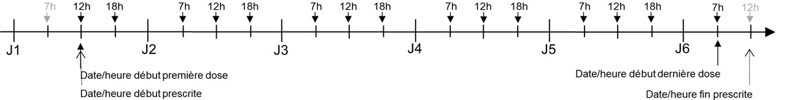
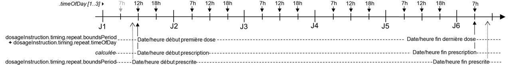

Guide d'implémentation de la ePrescription
1.1.0-ballot - ballot
FR
Guide d'implémentation de la ePrescription
1.1.0-ballot - ballot
FR
Guide d'implémentation de la ePrescription - version de développement local (intégration continue v1.1.0-ballot) construite par les outils de publication FHIR (HL7® FHIR® Standard). Voir le répertoire des versions publiées
MedicationRequest.medication
LASILIX® → marque ➟ code.coding.display dans le libellé correspondant au code UCD provenant du Référentiel Unique d’Interopérabilité du Médicament - RUIMfurosémide → principe actif ➟ .ingredient().item\[x\]20 mg → dosage ➟ optionnellement dans .ingredient().strengthsol inj → forme ➟ .formamp → présentation ➟ code EDQM dans le dénominateur du ratio du dosage et/ou du volume2 mL → volume ➟ .amountMedicationRequest.dosageInstruction
XX → quantité ➟ .doseAndRateà 7h et 18h → horaire de prise ➟ .timing.repeat.timeOfDay()per os → voie d’administration ➟ .routependant 5j → début (maintenant) et fin (début + 5j) ➟ .timing.boundsPeriodXX de la dose prescrite peut s’exprimer de 4 façons différentes, par exemple :
1 Ampoule(code EDQM 15002000)1 (unité [de présentation de l’unité de médicament prescrit] = ampoule contenant 20 mg de furosémide)20 mg (de principe actif = furosémide)2 mL (de produit = solution injectable contenant 20 mg de furosémide)Ces 4 expressions permettent de déterminer la quantité de(s) principe(s) actif(s) à partir de caratéristiques du médicament prescrit. Cependant, pour des raisons de simplicité de dispensation et d’administration, dans le cas des prescriptions en spécialité pour lesquelles la présentation est définie par le code UCD utilisé, la première expression en unité de présentation est préférée si possible.
MedicationRequest.medication
Furosemide → médicament en DC ➟ code.coding.display dans le libellé correspondant au code de substance (code SMS ou code technique ANSM) provenant du Référentiel Unique d’Interopérabilité du Médicament - RUIMfurosémide → principe actif ➟ .ingredient().item\[x\] (optionnel dans le cas d’un médicament simple préscrit en DC dans la mesure où le le principe actif est identique au médicament)MedicationRequest.dosageInstruction
XX de la dose prescrite ne peut plus s’exprimer que d’1 façon :
20 mg (de principe actif = furosémide)1 [unité de présentation](unité de présentation non définie dans medicationni dans le RUIM)1 (unité [de présentation de l’unité de médicament prescrit] = furosémide en quantité non définie)2 mL (de produit = un produit qui contient du furosémide en concentration non définie)entre
MedicationRequest.medication)Le dosage (.ingredient[].strength) est exigé quand le médicament prescrit est un médicament composé:
MedicationRequest.dosageInstruction.doseAndRate)L’unité est pertinente (donc autorisée), en fonction de son type,
On inclut dans définie, la possibilité de calcul à partir des propriétés connues. Par exemple, quantité connue 20 mg et volume connu 2 ml, implique que la concentration est définie, 10 mg/mL et que l’unité mL pour exprimer la quantité de la dose, par exemple 3 mL, est pertinente parce qu’elle détermine sa quantité de principe actif, 30 mg.
Les prescriptions FHIR peuvent contenir plusieurs parties textuelles:
Eléments de posologie non structurés
Certains éléments de posologie ne peuvent pas être représentés de manière complètement structurée ou doivent obligatoirement être représentés sous forme textuelle. Ces éléments sont renseignés dans un élément MedicationRequest.dosageInstruction.additionalInstruction.text.
Note 1: L’élément MedicationRequest.dosageInstruction.patientInstruction pourrait également être utilisé pour certaines indications complémentaires pour la posologie. Mais le choix entre MedicationRequest.dosageInstruction.patientInstruction et MedicationRequest.dosageInstruction.additionalInstruction.text n’est pas toujours évident. Afin de simplifier le profil, il a été décidé de n’utiliser que MedicationRequest.dosageInstruction.additionalInstruction.text qui peut être multivalué et éventuellement associé à un code. En conséquence, le profil FRMedicationRequestinterdit l’usage de MedicationRequest.dosageInstruction.patientInstruction
Note 2: L’élement MedicationRequest.dosageInstruction.additionalInstruction.text est réservé pour les éléments de posologie qui ont été renseignés “à la main” et ne peuvent pas être représentés de manière structurée. Il ne doit pas être utilisé pour du texte généré automatiquement à partir de données structurées.
Exemples d’éléments de posologie non structurés
MedicationRequest.dosageInstruction.timing.repeat.when ni dans le jeu de valeurs complémentaire fr-additional-when-codes associé à l’extension fr-additional-when-values
MedicationRequest.dosageInstruction.timing.repeat.when qui est monovalué
MedicationRequest.dosageInstruction.asNeededCodeableConcept
Spécificité ville
Dans le cas d’une dose calculée, si elle est fournie en plus de la valeur absolue, la valeur relative (ex. formule de calcul) doit être indiquée textuellement dans MedicationRequest.doseInstruction.additionalInstruction.text et non indiquée dans la partie structurée.
Version textuelle de la posologie
Afin de permettre l’affichage de la posologie par tous les logiciels, y compris ceux qui n’ont pas la possibilité d’interpréter la structuration de la posologie, la posologie associée à une ligne de prescription est à indiquer dans l’extension renderedDosageInstruction qui préfigure l’élément MedicationRequest.renderedDosageInstructionen FHIR R5.
Version textuelle de la prescription
Même si une version textuelle de la prescription est produite automatiquement dans MedicationRequest.text, elle est souvent difficile à comprendre quand on ne maitrise pas FHIR. Une version textuelle de l’ensemble de la ligne de prescription représentée par la ressource MedicationRequest peut être renseigné dans l’élément MedicationRequest.note.text. Dans l’éventualité où la ressource MedicationRequest aurait plusieurs éléments MedicationRequest.note il est recommandé d’ajouter le préfixe “Prescription textuelle:” à l’élément MedicationRequest.note afin de simplifier la compréhension.
Cas particulier de la traduction PN13 en FHIR
PN13 intègre beaucoup d’éléments textuels qui ne peuvent être indiqués que dans l’élément MedicationRequest.note. Afin de permettre de discriminer la portée de chaque note, l’extension fr-medicationrequest-note-scope a été créée. Elle n’est utilisée que dans le cas de prescription initalement en PN13 retranscrites en FHIR.
Les deux terminologies utilisables pour représenter les unités d’administration dans les posologies sont UCUM et EDQM.
Toute unité utilisée pour une posologie qui ne correspond pas à un code natif de ces terminologies ne doit être exprimé que par l’élément unit du datatype Quantity et des datatypes dérivés, les éléments code et system ne doivent pas à utiliser.
En particulier, les non unit UCUM (code entre accolades {} ou entre crochets []) ne doivent pas être utilisées.
Recommandation pour faciliter la dispensation
Lorsqu’une unité d’administration n’est pas en UCUM et EDQM et qu’il est donc difficile de traduire la prescription en nombre de “boite” de médicament à dispenser, il est recommandé que le prescripteur mette une indication de ce qui doit être dispensé dans une unité “convertible”. L’extension prescribedQuantity, héritée du profil européen, est à utiliser dans ce cas.
Quand elle n’est pas négligeable, sa valeur exprimée DOIT figurer au dénominateur de la dose prescrite.
Cf. Requirements de l’élément MedicationRequest.dosageInstruction.doseAndRate.rateRatio
Si une durée d’administration n’est pas spécifiée par le prescripteur, cela signifie qu’elle est négligeable. Par exemple pour l’administration d’un comprimé ou l’injection direct d’une solution.
Intraveineuse lente et intraveineuse directe ne sont pas des voies d’administration, quand bien même ces concepts s’y invitent régulièrement dans les listes locales des voies d’administration. Ce sont des méthodes, dont la principale différence porte sur la durée d’administration, qui n’est dans ce cas pas quantifée mais simplement qualifiée.
Si le prescripteur souhaite ne pas donner une durée d’administration explicite quantifiée, cette distinction qualitative DOIT être portée dans l’élément method de dosageInstructionde la ressource MedicationRequest. La voie d’administration, élément route, prend dans les deux cas la valeur voie intraveineuse.
Ni l’EDQM, ni SNOMED CT ne fournissent de codes pour nuancer la méthode d’administration injection. La distinction qualitative est donc à exprimer dans l’élément .textde method
Les injections continues sans mention de durée d’administration parce qu’elle est indéterminée au moment de la prescription sans pour autant être négligeable, se traduisent par une expression de la dose en débit, sans mention de quantité, ni de durée d’administration.
Elles se distinguent des expressions de doses à durée d’administration négligeable par l’absence de quantité.
exemple
"doseAndRate": [
{
...
"rateRatio": {
"value": 700,
"unit": "µg"
"system": "http://unitsofmeasure.org",
"code": "ug"
},
"denominator": {
"unit": "min",
"system": "http://unitsofmeasure.org",
"code": "min"
}
}
]
ou
"doseAndRate": [
{
...
"rateQuantity": {
"value": 700,
"unit": "µg/min"
"system": "http://unitsofmeasure.org",
"code": "ug/min"
}
}
]
Note: Il y deux façons d’exprimer un débit dans une dose FHIR :
min) au dénominateur (deniminator.code) dans un type de donnée ratio (rateRatio)ug/min) dans un type de donnée quantity (rateQuantity)La seconde implique une interprétation du code UCUM par le logiciel pour avoir connaissance de la notion de débit (savoir reconnaitre une unité de débit UCUM).
Sauf indication contraire dans la prescription via l’élément MedicationRequest.dosageInstruction.additionalInstruction.text, la structuration de la posologie (ex. l’utilisation de l’élément MedicationRequest.dosageInstruction.timing.repeat.when) ne doit pas interdire de rattraper une dose qui n’a pas été prise au bon moment.
Elles traduisent la période d’exécution de la prescription.
Cette information est portée individuellement par chaque ligne de prescription, c’est à dire au niveau de la ressource MedicationRequest profilée par FRMedicationRequest ou FRInpatientMedicationRequest, comme paramètre de la posologie prescrite, dans l’élément dosageInstruction de type Dosage, sous-élément timing de type Timing
.dosageInstruction.timing.repeat.boundsPeriod.start.dosageInstruction.timing.repeat.boundsPeriod.end.dosageInstruction.timing.repeat.boundsDuration, les date de début et date de fin ne figurent pas dans la ressource (dans le cas des prescriptions de médecine de ville ou des prescriptions hospitalières à exécution en ville).Ces dates de début et de fin de prescription, de même que la durée de prescription, ne sont pas des consignes de dispensation. Elles ne figurent donc pas dans les éléments .validityPeriod et .expectedSupplyDuration de l’élément .dispensationRequest.
En prescription intrahospitalière, il n’y a généralement pas de consigne de dispensation formulée par le prescripteur. Il n’y a donc généralement pas usage de l’élément .dispensationRequest.
Elles concernent également les règles définissant la première dose prescrite et la dernière dose prescrite.
Deux dates, de début et de fin, de la ligne de prescription doivent être considérées :
Date/heure de début prescrite de la ligne de prescription (MedicationRequest)
Définit la date/heure de début exprimée par le médecin lors de sa prescription. Note: Si seule la durée du traitement est exprimée, la date de début correspond à la date de la première prise.
La première dose prescrite:
Date/heure de fin prescrite de la ligne de prescription (MedicationRequest)
Définit la date/heure de fin exprimée par le médecin lors de sa prescription. Note: Si seule la durée du traitement est exprimée, la date de fin correspond à la durée du traitement après la date de la première prise.
La dernière dose prescrite:
dosageInstructiondosageInstructionLa date/heure de fin d’administration de la dernière dose (sa date/heure de début + sa durée d’administration) peut être supérieure à date/heure de fin prescrite.
Durée de prescription:
Elle est liée aux deux paramètres précédents. Quand ces trois paramètres sont exposés à l’utilisateur pour saisie, en général il en fixe deux et le troisième est calculé. Pour les prescriptions de médecine de ville ou les prescriptions hospitalières à exécution en ville, il est possible que seule la durée de prescription soit exprimée les dates de début et fin dépendant de quand le patient se fait délivrer les médicaments.
Les unités UCUM suivantes sont utilisées :
jour (code = d) : égale 24h.
mois (code = mo) : égale 28, 29, 30 ou 31 jours selon les mois impliqués.
Garantie du nombre de doses prescrites sur une période donnée:
Pour garantir qu’une prescription de, par exemple, 3 doses par jour pendant 5 jours, donne bien systématiquement 15 doses prescrites, comme logiquement attendu, et non pas 15 ou 16 en fonction des circonstances, il est spécifié dans ce guide d’implémentation que la date/heure de fin prescrite est exclue. En d’autres termes, l’intervalle [ date de début prescrite, date de fin prescrite [ est semi-ouvert.
Illustration Date de fin prescrite exclue : 15 doses (3/j x 5j = 15)

En effet, si la date de début prescrite est égale à la date de début de la premiére dose, un intervalle fermé incluant de la date de fin prescrite conduira à la prescription de 16 doses.
Illustration Si la date de fin prescrite était incluse : 16 doses (3/j x 5j = 16) !

Note: Dans FHIR, le type Period, utilisé pour porter le couple (date de début, date de fin), stipule que les bornes, start et end, sont incluses. L’interval est fermé.
Un interval semi-ouvert, par exemple [ 2021-02-14T12:34:56, 201-05-14T12:34:56 [, se traduira par un élément Period dans lequel
Rappel: Dans FHIR, le type datetime impose de donner les horaires à la seconde près lorsque l’heure est renseignée : format hh:mn:ss. Il est précisé que l’utilisateur fait son affaire de la granularité à l’heure ou à la minute près en remplissant les minutes et les secondes manquantes par des 00.
Néanmoins, pour exprimer l’horaire de fin exclu à la granularité horaire ou minute, il conviendra de remplir les minutes ou secondes manquantes par 59.
Par exemple 3j à partir du 14 fév 2021 12h34 (résolution à la minute)
ou 3j à partir du 14 fév 2021 12h (résolution à la tranche horaire)
Date/heure de début effective et Date/heure de fin effective de la ligne de prescription:
Ces deux dates ne figurent pas dans MedicationRequest R4.
Dans la R5, un élément [effectiveDosePeriod](https://www.hl7.org/fhir/medicationrequest-definitions.html#MedicationRequest.effectiveDosePeriod) conçu pour accueillir ces deux dates a été ajouté.
Note PN13:
Les règles de gestion suivantes doivent être appliquées pour définir ces deux dates en fonction de la collection de dosageInstruction associée au MedicationRequest. Elles reprennent celles de PN13 et sont conformes à la définition de la R5.
dosageInstruction.dosageInstruction.Illustration 1 comprimé 3 fois par jour (7h, 12h, 18h) pendant 5 jours, prescrit à 10h30, à partir de maintenant (10h30), donc 1ère dose à 12h.

Notes
Dans cet exemple,
dosageInstruction.doseAndRate.RateRatio.denominator, à la date/heure de début d’administration de cette dernière dose.dosageInstruction rattachés à MedicationRequest, c’est l’interprétation de la collection de dosageInstruction qui doit conduire au calcul de ces dates/heures début/fin effectives de MedicationRequest (fonction min() pour les dates de début, fonction max() pour les date de fin).Illustration G5 1L sur 12h, 2 fois par jour (10h, 22h) pendant 5 jours, prescrit à 9h30, à partir de maintenant (9h30), donc 1ère dose à 10h.

Note
Dans cet exemple
Pour les posologies conditionnelles d’un évènement aléatoire, « si douleur » par exemple, il faut prendre comme dates/heures de début/fin de MedicationRequest celles de la période de prise en compte de l’évènement.
Elles présentent la particularité d’avoir un médicament prescrit composé de plusieurs médicaments simples, exprimés en spécialité et/ou en DC.
De ce fait, le rapport entre les caractéristiques du médicament prescrit composé et l’expression de la quantité des doses prescrites présente quelques particularités.
Dans un médicament composé, permet d’exprimer à quel médicament composant, quelle ressource Medication, se réferre l’expression de la dose.
Ex: Permet de rapporter l’expression de la quantité 4g de la dose, au médicament céfotaxine du médicament composé céfotaxine dans 100 mL de glucose 5%.
Cette information est portée par l’extension FrBasisOfDoseComponent de l’élément doseAndRate du type complex Dosage qui s’applique à l’élément dosageInstruction* de la ressource MedicationRequest.
Voir exemple céfotaxine dans G5 100 mL, 4g céfotaxine en 20 min toutes les 6h pendant 4j
Note PN13:
Dans un médicament composé, permet d’exprimer quel composant, quelle ressource Medication, est le soluté.
Ex: Permet de marquer le glucose 5% comme étant le soluté dans le médicament composé céfotaxine dans 100 mL de glucose 5%.
Cette information est portée par l’extension FrIsVehicle.
Cette extension est appliquée à l’élément ingredient de la ressource Medication composée.
Voir l’exemple céfotaxine dans miniperf G5 100 mL, 4g céfotaxine en 20 min toutes les 6h pendant 3j
Note PN13:
Cette expression est utilisée dans la prescription des injectables en seringue électrique pour déclarer le volume de soluté composant le médicament prescrit en quantité suffisante pour atteindre le volume du médicament composé, c’est-à-dire le volume final de la seringue.
L’application de la règle suivante répond à ce cas d’usage :
Cette règle impose l’utilisation de l’extension IsVehicule. Voir exemple dobutamine 200 mg dans soluté=G5 qsp 40 mL, 400 µg/min pendant 1j
En R5, la ressource Medication voit l’élément ingredient.strength passer de type exclusivement Ratio en type alternatif Ratio, Quantity ou CodeableConcept avec jeu de valeurs préferré contenant la valeur qs (quantité suffisante pour).
.totalVolume : le volume cible de la seringue,.ingredient\[soluté\].strengthCodeableConcept : le code qs
il est prescrit explicitement que le soluté est en Q.S.P. le volume cible de la seringue.Note:
En R5 l’élément amount est renommé totalVolume pour lever toute ambiguité avec les volumes pouvant figurer dans les ingredient.strength\[x\].
spécifité ville La Q.S.P que l’on peut retrouver sur certaines ordonances de ville n’a pas la même signification qu’à l’hôpital, elle est à comprendre comme une durée de traitement. De ce fait, elle est traduite:
MedicationRequest.dosageInstruction.timing.repeat.bondsDurationsi aucune date de début n’est mentionéeMedicationRequest.dosageInstruction.timing.repeat.bondsPeriod.end si une date de début est mentionnéeUn patch est un médicament incluant un dispositif intégré garantissant
Ces informations sont des propriétés du médicament prescrit.
Soit elles font partie intégrante du médicament prescrit dans le cas d’une prescription en spécialité ou d’une prescription de médicament virtuel, soit s’expriment dans la ressource Medication référencée par l’élément medication qui décrit l’unité de médicament prescrit dans la ressource MedicationRequest.
La durée d’administration du patch est un choix du prescipteur.
Elle DOIT être exprimée en tant que telle dans les éléments dosageInstruction.timing.repeat.duration et dosageInstruction.timing.repeat.durationUnit, même si elle est identique à la durée maximale garantie par le dispositif intégré.
Il arrive que la dose prescrite découle d’un dose de référence formulée en quantité de principe actif par unité de poids ou de surface corporelle. La dose effectivement prescrite est arrondie à une valeur réalisable.
Ex: capécitabime 1000 mg/m².
Ces deux valeurs de la dose prescrite sont transmises dans deux éléments doseAndRate distingués par leur type
"doseAndRate": [
{
"type": {
"coding": [
{
"system": "http://terminology.hl7.org/CodeSystem/dose-rate-type",
"code": "calculated",
"display": "Calculated"
}
]
},
"doseQuantity": {
"value": 1000,
"unit": "mg/m²",
"system": "http://unitsofmeasure.org",
"code": "mg/m2"
}
},
{
"type": {
"coding": [
{
"system": "http://terminology.hl7.org/CodeSystem/dose-rate-type",
"code": "ordered",
"display": "Ordered"
}
]
},
"doseQuantity": {
"value": 1800,
"unit": "mg",
"system": "http://unitsofmeasure.org",
"code": "mg"
}
}
]
Voir exemple capécitabine 1800 mg (1000 mg/m²), 7h et 18h per os, pendant 14j
spécifité ville La dose réélle pertinente (valeur absolue) doit être la seule indiquée dans la partie structurée de la posologie. La dose théorique en fonction de paramètres patient (valeur relative) peut être exprimée dans la partie textuelle (i.e. dans MedicationRequest.dosageInstruction.additionalInstruction.text). Voir exemple HAS - INNOHEP® 14 000 UI anti-Xa/0,7 ml (tinzaparine sodique) solution injectable : 12 000UI anti-Xa (soit 170 UI anti-Xa /kg) , 1 fois/jour - voie sous-cutanée (id_poso=3)
Note:
Il est tout à fait possible de prescrire plus simplement capécitabine 1000 mg/m², accompagnée de la surface corporelle (1,85 m²), voire seulement de la taille (1,75 m) et du poids (70 kg) du patient dans des ressources Observation référencées par MedicationRequest.supportingInformation.
Mais c’est un autre cas d’usage, qui, quand bien même il déboucherait sur la même délivrance, capécitabine 1800 mg, laisserait au pharmacien l’arbitrage de l’arrondi par rapport à la dose prescrite. C’est un cas d’usage différent parce que l’acteur et le temps où se fait l’arrondi ne sont pas les mêmes.
Les liens entre lignes de prescription peuvent bien sûr être indiqués dans les éléments MedicationRequest.dosageInstruction.additionalInstruction.text. Cependant, afin de faciliter la constitution automatisée de plan de prise et assurer une meilleure sécurité de prise, il est possible d’en modéliser certains via une ressource RequestGroup. La ressource RequestGroup utilisée pour représenter ces liens est liée aux ressources MedicationRequestconcernées par l’élément groupIdentifier
Point d’attention
L’utilisation de la ressource RequestGroup impose que les MedicationRequestliées aient comme valeur optionpour MedicationRequest.intent. Il est donc primordial pour toute MedicationRequest avec option comme intent de rechercher d’éventuelles ressources RequestGroup ayant le même groupIdentifier pour vérifier s’il s’agit d’une ligne de prescription liée à une autre.
Médicaments à prendre en même temps
Les lignes de prescription correspondant à des médicaments à prendre en même temps sont liées par une ressource RequestGroupréférençant chaque ligne dans un occurrence de RequestGroup.action(via RequestGroup.action.resource.reference). La prise en même temps est représentée par une relation de type concurrent entre les deux actions.
Médicaments à prendre avec un intervalle de temps
Les lignes de prescription correspondant à des médicaments à prendre avec un intervalle de temps entre les deux sont liées par une ressource RequestGroupréférençant chaque ligne dans un occurrence de RequestGroup.action(via RequestGroup.action.resource.reference). La prise en différée est représentée par une relation de type after ou beforeentre les deux actions.
Alternative entre deux médicaments
Les lignes de prescription correspondant une alternative sont liées par une ressource RequestGroupréférençant chaque ligne dans un occurrence de RequestGroup.action(via RequestGroup.action.resource.reference). L’alternative est représentée par la valeur ALT dans l’extension fr-additional-action-relationship au niveau de l’élément RequestGroup.action.relatedAction, la valeur de RequestGroup.action.relatedAction.relationship étant fixée à concurrent. L’action qui porte cette relation référence le médicament de “seconde intension” si le premier n’est pas adapté. Les conditions d’utilisation du médicament de “seconde intension” sont à indiquer dans RequestGroup.action.description